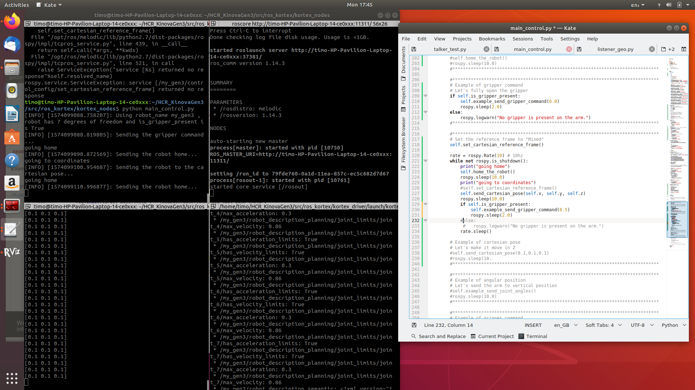

Find out about the projects I have done
At Imperial College I have worked on a system that would help people with diseases as ALS feel more present in the room. It was part of the master course 'Human Centered Robotics' in the department of Electrical and Electronic Engineering. I was part of a team with 3 PHD students so that was quite an experience.
My job was to write the python code for controlling the robot arm, camera calibration and set-up ROS to connect with the eye-gaze.
click here to see the report:
ReportPicture of ROS melodic running on Ubuntu 18.
{% load static %} The code that I have written to control the arm: main_control.py